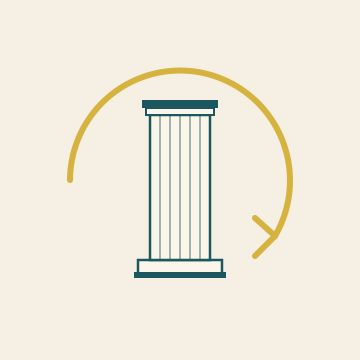

★ PHILOSOPHY
A newspaper about thinking without blinkers

★ PHILOSOPHY
What lies beneath the choices we make? Which concepts carry our institutions, and which concepts can we not yet do without because we have not yet thought them through? The Philosophy section gathers manifestos and essays that put the foundations up for discussion — not as debating art, but as exercise in freer thinking.
★ I · Foundation
The pieces that lay new ground.
★ II · Architecture
How a system gives shape to itself. Cross-links to existing analyses elsewhere on the site.
EDITION 2 · SELF-REINFORCING SYSTEM
How a system turns against itself — the self-reinforcing crisis of the net external productive core.
Read the manifesto →EDITION 2 · FOUNDATION
A new political-constitutional model. Decide per subject, with measurable price-performance.
Read the manifesto →EDITION 6 · FOREWORD
Europe between tsar, lawyers and chemist. The philosophical foreword of edition 6.
Read the manifesto →EDITION 1 · FLUID DYNAMICS
Fluid dynamics as mother of all science. A philosophical foundation for thinking in cycles.
Read the manifesto →★ III · The instrument
What thinking needs to stay sharp — self-knowledge, tradition, resistance to mystification.
EDITION 5 · GROUND-PRINCIPLE
Three traditions, one principle. What contributes 5× less than the main factor does not count.
Read the manifesto →EDITION 5 · FORM OF DEMOCRACY
A collegial democracy as keystone — what Switzerland did in 1848 that we could have adopted.
Read the manifesto →EDITION 5 · TO THE READER
What you can do with this instrument — and why that is what the paper industry can least bear.
Read the manifesto →EDITION 3 · PRIMAL FEELING
The principle that precedes all later layers. How the primal feeling arises, what it does, and why every good leader works with it more than they admit.
Read the manifesto →